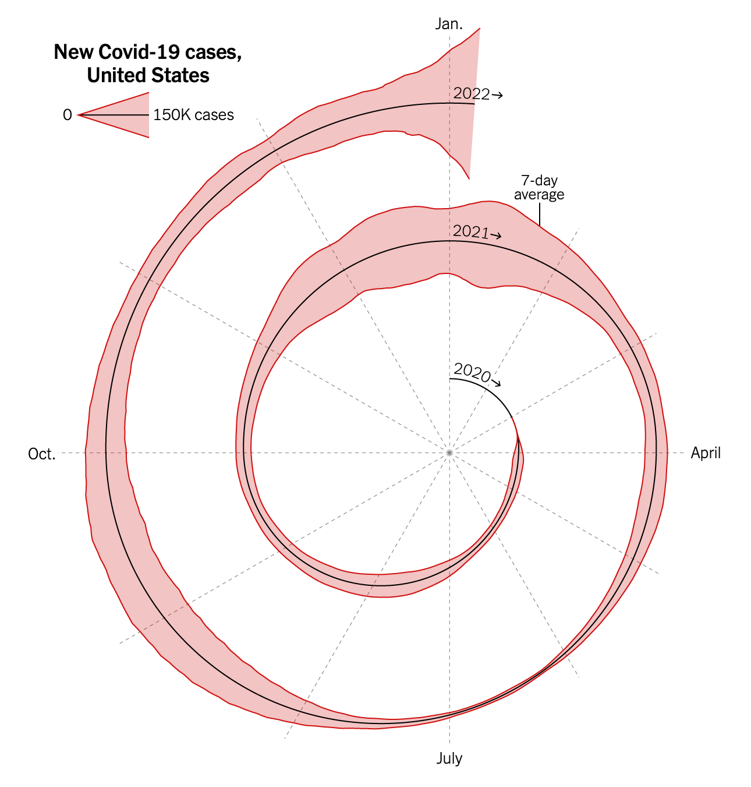

0. Assignment Overview
This report critiques a well-known COVID-19 visualization (the NYT “spiral” chart published during Omicron) and develops redesigned alternatives through sketches and a final, polished visualization. The goal is to justify the contribution of every design element and clearly communicate a takeaway message for a general audience.
Dataset: COVID_US_cases.csv (Google Covid-19 Open Data).
Submission: single HTML page with critique, sketches, final chart, and write-ups.
1. The Original Visualization
Below is the original “spiral chart” shown in the New York Times opinion article. I first “read” the chart to extract patterns that are visible without critique, then critique the design choices and redesign it.

1A. Insights I can read from the original
- Insight 1:
- Insight 2:
- Insight 3:
Tip: keep these as concrete and visual (peaks/troughs, timing, relative magnitude), not interpretive claims.
2. Critique (1–2 paragraphs)
The spiral works well because it reframes time as cyclical rather than strictly linear, which makes the recurring winter surges immediately visible. By aligning months radially across years, January 2021 and January 2022 occupy the same spatial position, making seasonal repetition intuitive without needing heavy annotation. The outward expansion of the spiral also reinforces magnitude: the Omicron wave feels dramatically larger because it pushes to the outermost edge of the form. The layered encodings — radial distance for case counts, a smoothed black 7-day average line, and the red shaded band help communicate both volatility and overall trend. For a general news audience, the visualization is memorable and emotionally resonant, emphasizing pattern and escalation rather than raw numbers.
However, the spiral sacrifices precision for visual impact. Without consistent radial tick marks or clearly labeled scales, it is difficult to interpret exact case counts, forcing viewers to estimate rather than read values directly. The shaded band can also exaggerate perceived growth because area expansion feels more dramatic than changes along a single line. In addition, outer loops visually dominate inner ones, making early pandemic data harder to compare fairly with later waves. The chart could improve by adding subtle radial gridlines, clearer numeric anchors at regular intervals, and annotated peak values for each major surge. Pairing the spiral with a small linear time-series chart could also preserve its narrative strength while restoring clarity for detailed comparison.
3. Sketches (3) + Rationale
I sketched three distinct redesign directions to explore alternatives to the spiral form, test different encodings, and address the issues surfaced in the critique. Each sketch includes a brief rationale and what I would iterate next.
Sketch 1

- Motivation:
- Key design choices:
- What worked:
- What didn’t:
- Next iteration:
Sketch 2

- Motivation:
- Key design choices:
- What worked:
- What didn’t:
- Next iteration:
Sketch 3

- Motivation:
- Key design choices:
- What worked:
- What didn’t:
- Next iteration:
4. Final Visualization
The final chart below is my best attempt to communicate a clear takeaway message for a general audience. It builds on the sketch exploration by emphasizing comparability over time, legibility, and clear annotation of key waves.

4A. Final write-up (2 paragraphs)
[Paragraph 1: What message you’re trying to convey and why this design best supports it.]
[Paragraph 2: What encodings/transforms you used and why; what tradeoffs remain; how this addresses your critique.]
4B. Data transformations / methods (optional but helpful)
- Transform(s):
- Filtering:
- Annotation strategy:
- Tooling: